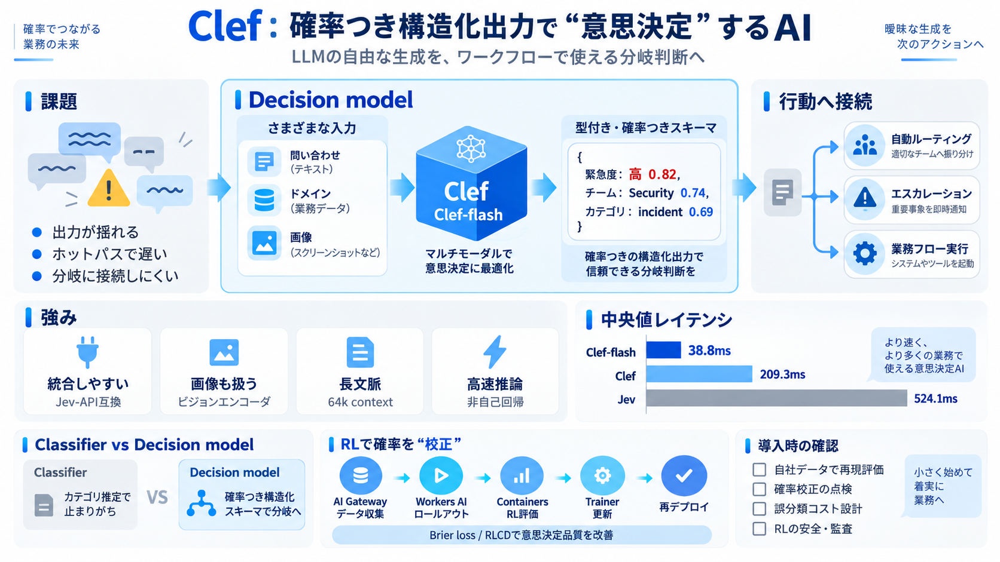

Cloudflare Clef Decision Models: Jev-Compatible, Benchmarked and Priced - Developers Digest
Cloudflare released Clef and Clef-flash on October 1: two decision models with Apache 2.0 weights, hosted on Workers AI …

Cloudflareの意思決定モデル「Clef」と高速版「Clef-flash」、そしてRLで意思決定の“校正”を高める仕組みを、要点だけに圧縮します。
意思決定モデル＝入力を受けて、確率つきの型（スキーマ）に沿った構造化出力を返す仕組み（decision）です。
生成LLMは出力が揺れやすく、ホットパスでは遅延も問題になり得ます。そこで必要なのは、分岐ロジックにそのまま使える“厳密な構造”の出力です。
意思決定モデルは、入力（問い合わせ・ドメイン・画像など）から、定型の選択肢（緊急度・チーム・カテゴリ等）を“確率つき”で返します。
重要なのは、出力の形式を厳密に制約し、ワークフローの分岐にそのまま差し込めることです。
Clefは「Jev-API互換」と、型が厳密に定義された確率つき出力を重視します。これによりエージェント/業務システムでの統合がしやすくなります。
Clefはビジョンエンコーダ搭載、64kコンテキスト長、複数ベンチマークでの競争力を持ち、非自己回帰設計で高速推論を狙います。
高速版のClef-flashはレイテンシ重視で、中央値レベルでJevより大幅に短い値が紹介されています。
参考：Jev：524.1ms（比較として掲載）
Clefは accuracy、macro-F1、nDCGなどの複数指標と、請求書処理・顧客サポート・セキュリティインシデント等の業務フロー例で競争力を示します。
単なる分類精度ではなく、「確率が意思決定に使える状態か」をBrier lossやRLCDで改善する思想が示されています。
AI Gatewayでデータセット作成→Workers AIでベースロールアウト→ContainersでRLサンドボックス評価→Trainerで更新→必要に応じて再デプロイ、という一連の流れです。
通常の classifier はカテゴリ出力で止まりがちですが、意思決定モデルは確率つきの型を返し、分岐・エスカレーションなどの“行動”へつなげやすい点が違いです。
一般に、精度と総合バランスを見たいならClef、レイテンシが厳しいならClef-flashが候補になります。最終的には自社要件で速度・精度のトレードオフ検証が必要です。
確率つきの構造化出力を低遅延で安定供給できると、エージェント実装コストと運用リスクを下げ得ます。特に「Jev-API互換」「型付き」「非自己回帰」「確率校正」を一方向にまとめています。
ベンチと自社環境の分布・誤分類コスト・閾値は一致しないため、確率校正が合っていても最適性が変わり得ます。RLも、データ収集・評価設計・安全性・監査可能性が不十分だと期待通りに改善しない可能性があります。
Clefは“用途特化前の土台”として価値が高そうです。導入時は、(1)自社データで再現評価、(2)確率校正の再点検、(3)誤分類コスト設計、(4)RL学習の安全・監査要件確認、をまとめて行うのが現実的です。
Cloudflare released Clef and Clef-flash on October 1: two decision models with Apache 2.0 weights, hosted on Workers AI …
On benchmark testing tied to the Jev Decision Index, Cloudflare says Clef currently leads the field, with full results p…
Across the 43 eval benchmarks that we ran, our Clef models beat the decision models on latency (except for Laya which is…
Cloudflare claims Clef and Clef-flash deliver higher accuracy and lower latency than general-purpose LLMs such as gpt-os…
Cloudflare released Clef today: an open-weights "decision model" built to pick, rank, and gate instead of generating tex…